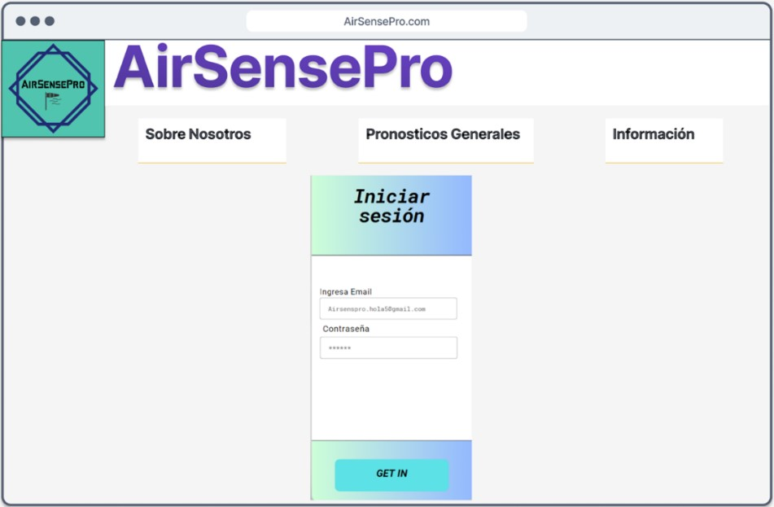
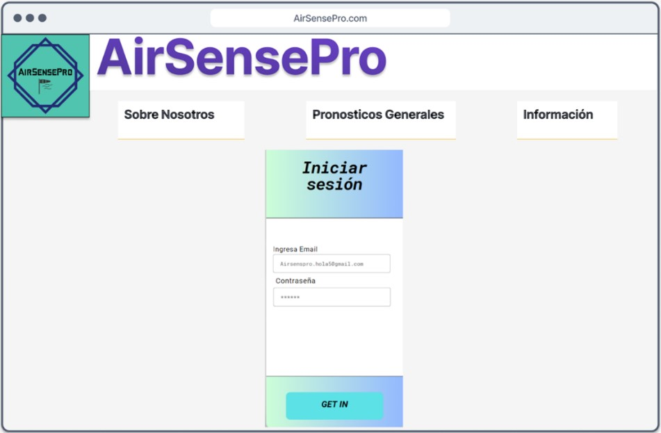

Desarrollar una plataforma web que permita visualizar información de agentes contaminantes del aire a través de sensores, con el fin de monitorear las emisiones
El problema de las empresas en Bogotá que son clausuradas por no regular sus emisiones de aire contaminantes es una preocupación creciente en la ciudad. A medida que la población y la actividad industrial se han incrementado, se ha observado un aumento significativo en la contaminación del aire, lo que representa un riesgo para la salud de los habitantes y el medio ambiente (Semana, 2018)
Las empresas que no controlan adecuadamente sus emisiones contaminantes afectan directamente la calidad del aire en Bogotá. Estas emisiones, que pueden provenir de procesos industriales, como en empresas textiles, empresas de plástico y empresas de instalaciones eléctricas, contienen una variedad de contaminantes nocivos como el dióxido de carbono, monóxido de carbono, dióxido de azufre, óxido de nitrógeno, entre otros.
En respuesta a esta problemática, las autoridades locales en Bogotá han implementado regulaciones y políticas más estrictas para controlar las emisiones de aire contaminantes. Las empresas están obligadas a cumplir con ciertos estándares y llevar a cabo medidas de control, como realizar monitoreo regular de las emisiones (Secretaría de ambiente, 2022)
¿Cómo monitorear los agentes contaminantes a través de una plataforma web?
 
